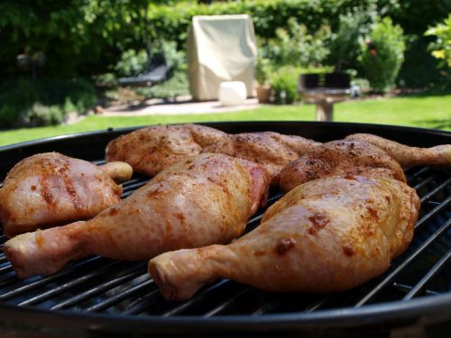

Chiavetta's Chicken

Description
The best way to grill chicken is to use Chiavetta's Barbeque Marinade! This tangy-sweet
flavor will have you addicted in no time!
Ingredients
- Chicken thighs (bone in, skin on)
- Chiavetta's Barbeque Marinade
Steps
- Take the raw chicken thighs and place into a large pot. Cover with water.
- Bring the chicken to a boil and reduce heat to medium/low heat for 15 mins.
- Let the chicken cool in a collander before placing into a tightly sealed container.
- Once into a tightly sealed container – pour the marinade into the container till
the chickens are just about covered. Cover and refrigerate. For best results, let
sit for 24 hours prior to cooking. You can let it sit for a few hours, just the taste
will not be the same and will not be throughout the chicken meat.
- Preheat your grill to medium heat and place thights on grill for 15-20 mins.
Flipping a few times during cooking. Make sure to cook to internal temp of 165 F.